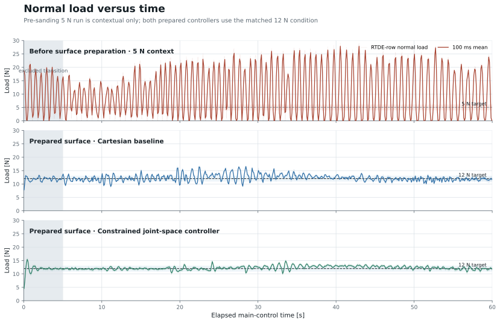
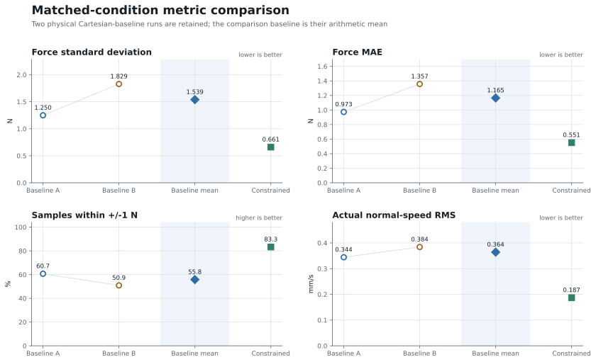
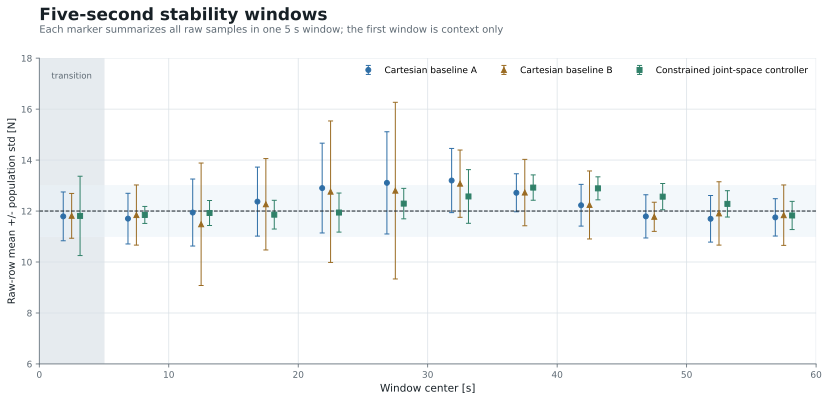
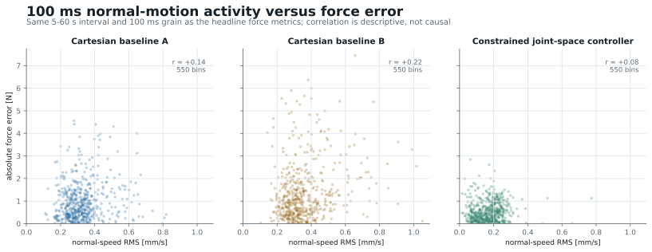

UR10e contact-control progress · Group meeting · 16 July 2026
UR10e Rolling-Contact Force-Control Progress
Executive summary
At the same 12 N target and outer-loop gains, the constrained joint-space controller is markedly steadier without shifting the mean load.
Evidence boundary. Independent physical runs support the stability comparison; they do not isolate one inner component as the sole cause.
Report contents
- Executive summary
- Experimental setup and contact mechanics
- Surface preparation
- Why 12 N instead of 5 N
- Controller realization
- Fair comparison protocol
- Force stability results
- Why the constrained controller appears more stable
- Current completion boundary
- Automatic tuning objective
- Parameter grid and Bayesian Optimization
- Physical experiment loop
- Video evidence and next experiment
Experiment basis
Experimental setup and contact mechanics
The robot follows a tangential cycloid while regulating compressive load through a rolling-ball contact.
Observed force also reflects surface geometry, ball mechanics, kinematics, command smoothing, and robot-side control.
Shared experiment timeline
Controlled experimental condition
Surface preparation
240# → 320# → 400# → 600# progressive preparation reduced local high spots along the rolling path.
Comparison boundary. Both matched controller runs used the prepared surface. A pre-sanding 5 N run is shown later as context, not as a controlled controller comparison.
Target-force decision
Why 12 N instead of 5 N
12 N was selected from preload behavior and completed physical runs—not from the model name.

Physical evidence ladder
5 N — insufficient margin in one attempt
Contact was lost before the ramp target exceeded approximately 5.1 N. One attempt—not a threshold.
10 N — continuous motion validated
60.2 s completed · mean 10.26 N · max 18.55 N · 0 s above 20 N.
12 N — selected operating point
60 s completed · mean 12.265 N · max 16.952 N · 0 s below 5 N or above 20 N.
Decision. 12 N gives more preload margin than 5 N while remaining inside the observed envelope. It is empirical, conservative, and not claimed optimal.
Controller realization
Controller realization: Cartesian baseline versus constrained joint space
The outer law is matched; the inner command realization changes.
Measurement contract
Fair comparison protocol
Two Cartesian-baseline runs expose run-to-run variation under the same outer-loop settings.
| Comparison item | Locked value |
|---|---|
| Target force | 12 N |
| P | 0.001 |
| I | 10⁻⁵ |
| Damping | 7 |
| Integral limit | 1 N·s |
| Tangential gain | 1.5 |
| Headline interval | 5–60 s of main contact control |
| Resampling | fixed 100 ms bins |
| Samples per run | exactly 550 bin means |
Headline window
100 ms bin means per run from 5–60 s.
Metric definitions
- Force standard deviation and MAE use the 550 load bins.
- Within ±1 N counts bins in the 11–13 N band.
- Normal-speed RMS uses the matched 5–60 s interval.
Boundary. Independent runs compare observed stability; they are not randomized A/B evidence and cannot isolate the RNN alone.
Matched 12 N comparison
Force stability results
The constrained controller lowers fluctuation without shifting the mean load
| Metric | Cartesian baseline mean | Constrained controller | Change |
|---|---|---|---|
| Force standard deviation | 1.539 N | 0.661 N | 57.1% lower |
| Force MAE | 1.165 N | 0.551 N | 52.7% lower |
| Within ±1 N | 55.8% | 83.3% | +27.5 percentage points |
| Normal-speed RMS | 0.364 mm/s | 0.187 mm/s | 48.6% lower |
| Mean load | 12.278 N | 12.265 N | −0.013 N |



Mechanism and limits
Why the constrained controller appears more stable
Normal-motion RMS falls from 0.364 to 0.187 mm/s, consistent with lower force excitation.

Causal boundary. The inner realization changed as a bundle; slew and acceleration limits still require separate ablation.
Current evidence boundary
Current completion boundary
Full contact trajectory and matched comparison data.
60.15 s test · 1.18 ms p99 · 4.01 ms max gap.
Link the remediated route to a synchronized run log before tuning.
The stability result is physical; the scheduler remediation is implemented and offline-verified, not yet physically confirmed.
Tuning framework
Automatic tuning objective
Optimize force MAE only across complete, feasible 60 s physical trials.
Optimization variables
Execution-profile settings remain separate.
Feasibility constraints
Current state. The framework is implemented, but no eligible tuning trial is presented here. Platform failures do not count as bad gain candidates.
Structured search
Parameter grid and Bayesian Optimization
A log-scale lattice constrains Bayesian Optimization to nearby, interpretable candidates.
Baseline: P₀ = 0.001 · I₀ = 10⁻⁵ · damping₀ = 7
| Search condition | P | I | damping |
|---|---|---|---|
| Initial neighborhood | k = −4,…,4 | fixed at baseline | k = −4,…,4 |
| After ≥6 eligible trials and ≤15% repeat error | k = −6,…,6 | off or k = −4,…,4 | k = −6,…,6 |
| After repeated improvement at a boundary | k = −8,…,8 | off or k = −8,…,8 | k = −8,…,8 |
Separate gain search from motion aggressiveness
| Controller optimization | Execution-profile choices |
|---|---|
| P, I, damping | normal rate: 0.010, 0.015, 0.020 rad/s |
| objective: force MAE | host q̇ slew: 0.1, 0.2, 0.5 rad/s² |
| candidate must remain feasible | robot acceleration: 0.1, 0.2, 0.5 rad/s² |
| q̇ cap fixed at 0.5 rad/s |
Bayesian Optimization loop
Physical evidence generation
Physical experiment loop
Report update pipeline
Only a complete, safe trial enters optimizer history; the report adds results only after eligible evidence exists.
Physical evidence
Video evidence and next experiment
Next physical sequence
- Confirm the scheduler-remediated route in one guarded physical contact run.
- Link the video, controller configuration, and synchronized run log.
- Run the exact tuning baseline, then admit only complete 550-bin trials.
Next questions. Does the timing fix preserve stability? Which inner limit contributes most? Can MAE reach 0.30 N twice with ≤15% repeat error?